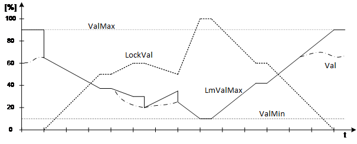

[LM] 最佳启动停止控制
功能块 LOCK_LM 根据锁定值 [LockVal] 限制控制值。
LOCK_LM 根据锁定值 [LockVal] 限制控制值（0% 到 100%）。 LOCK_LM 计算最大值。基于锁定值 [LockVal] 和当前控制值 [Val] 的允许控制值。输入 [ValMin] 和 [ValMax] 指定 [Val] 和 [LmValMax] 的无效范围。
Functioning
锁定信号 0% 表示没有电流限制。如果能量限制功能未激活，输出 [LmValMax] 将设置为 [ValMax]。如果 [LockVal] 增加，[LmValMax] 会连续降低至最小值。 [ValMin] 的。如果 [LockVal] 减小，则 [LmValMax] 增大至最大值。 [ValMax] 的。
为了立即响应控制值，必须在输入 [Val] 处指示实际控制值。当 [LockVal] 改变方向时，[LmValMax] 设置为 [Val]。

Application
当热发生器必须减少负载时，LOCK_LM 可用于限制设备的热消耗。在这种情况下，LOCK_LM可以限制执行装置的输出或直接用设定值来控制。
Troubleshooting
输入 [LockVal] 处的值限制在 0% - 100% 范围内。